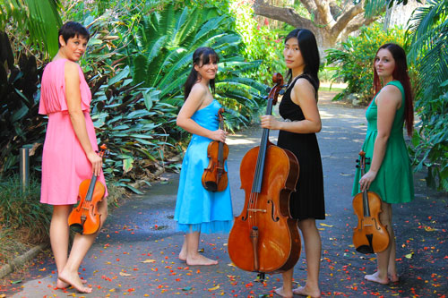

Four talented musicians combine their skills in a variety of musical styles including fiery Rhumbas, Tangos, Serenades - a mixture of the most devine and swoon-worthy pieces, guaranteed to delight the senses.
The group features Caroline Lloyd-Doolan and Susan Fraser on Violin, Ivy Wu on Cello and Jessica Winton on viola.
Caroline is a well known performer both locally and regionally and Susan is also well known on the local music scene.
Ivy hails from Brisbane having completed her studies in France.
Jessica has come back to Townsville after completing her degree in Tasmania.
The girls all have a passion for chamber music and are very excited to be able to form up a group that will be able to perform regularly both locally and in the surrounding regions.
Their concert will take listeners through a wonderful journey of beautiful melodies and the most romantic music that is guaranteed to leave the senses fulfilled and wanting more.
For more information -
Phone: 07 4724 2086
Mobile: 0402 255 182
e-mail admin@townsvillemusic.org.au